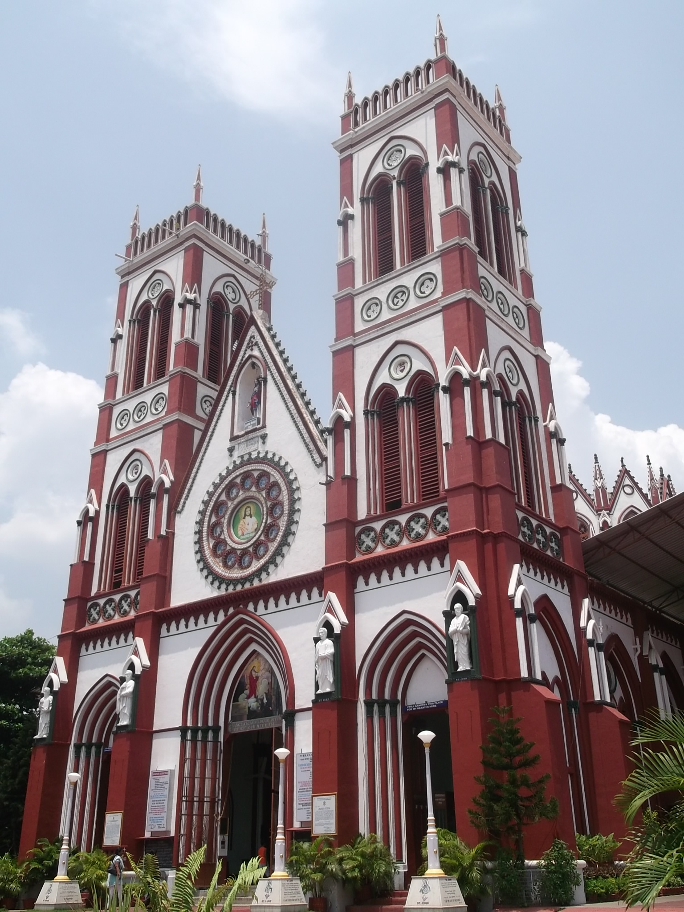
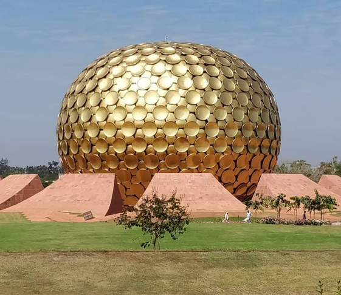

Must-Visit Places

Rock Beach
A scenic promenade along the Bay of Bengal, perfect for evening walks and sunrise views.

Sacred Heart Basilica
A stunning neo-Gothic church with beautiful stained glass windows and French colonial architecture.

Auroville
An experimental township dedicated to human unity and sustainable living.